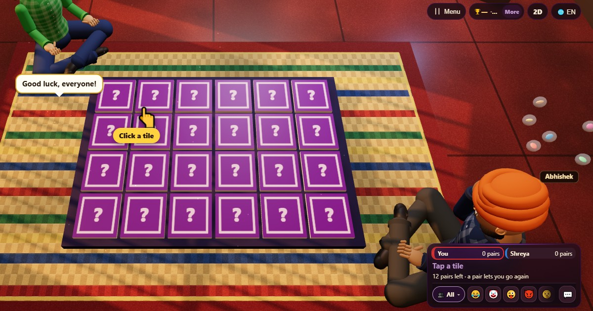

Game Ingatan (Memory Match)
- 👥 2–4 pemain
- Game kertas dan pensil
- 🆓
Panduan Bahasa Indonesia
Buka dua kartu dan ingat isinya. Pasangan untuk yang ingatannya paling tajam.
English name: Memory Match

Cara bermain
- Di giliranmu, ketuk dua kartu untuk membukanya. Semua pemain bisa melihatnya.
- Kalau cocok, pasangan itu milikmu dan kamu jalan lagi.
- Kalau tidak cocok, kartunya tertutup lagi saat giliran pemain berikutnya dimulai, dan giliran berpindah.
Poin
Setiap pasangan bernilai satu poin.
Siapa yang menang
Saat semua pasangan ditemukan, pemain dengan pasangan terbanyak menang. Kalau semua sama, hasilnya seri.
Pertanyaan yang sering diajukan
Apakah pemain komputer curang?
Tidak. Mereka hanya tahu kartu yang sudah dibuka, dan sebagian juga mereka lupakan.
Ada berapa pasangan?
Dua belas pasangan, di dua puluh empat kartu.
Cara bermain
- Sebagai tamu: Tanpa daftar dan tanpa login. Pilih nama dan langsung main.
- Lawan komputer: Kalau tidak ada teman, pemain komputer mengisi kursi kosong. Mudah, normal, atau sulit.
- Online: Duduk di meja umum bersama pemain dari seluruh dunia.
- Bareng teman di dekatmu: Buat permainan di satu HP lalu bagikan kode atau QR. Teman bergabung dari HP mereka.
- Di satu HP: Gantian pegang HP: satu perangkat cukup untuk seluruh keluarga.
Bahasa lain
- हिन्दी: मेमोरी मैच
- Hinglish: Memory Match
- Español: Memorama
- Português: Jogo da memória
- Français: Jeu de mémoire
- Deutsch: Gedächtnisspiel
- Türkçe: Hafıza Oyunu
- Italiano: Gioco della memoria
- 日本語: 神経衰弱
- 한국어: 같은 그림 찾기
- 中文: 记忆翻牌
- Русский: Найди пару (Мемори)
- اردو: میموری میچ
- नेपाली: मेमोरी म्याच
- বাংলা: মেমোরি ম্যাচ
- English: Memory Match · Aturan lengkap (Inggris)
Ide permainan
Semua game


Di ChitPlay tidak ada uang sungguhan, taruhan, atau hadiah. Poin tidak bernilai.